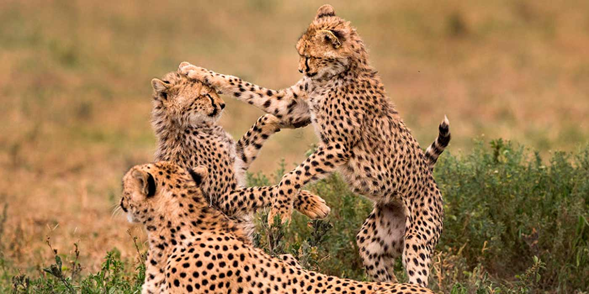
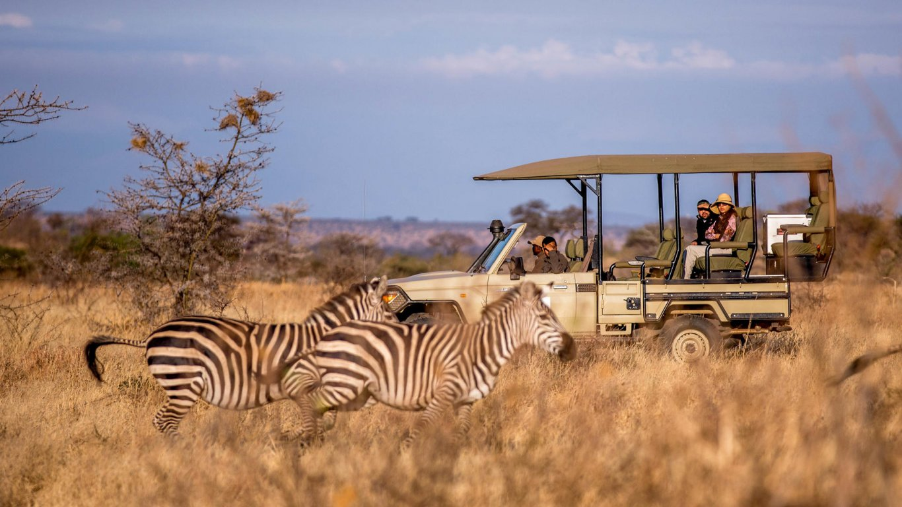
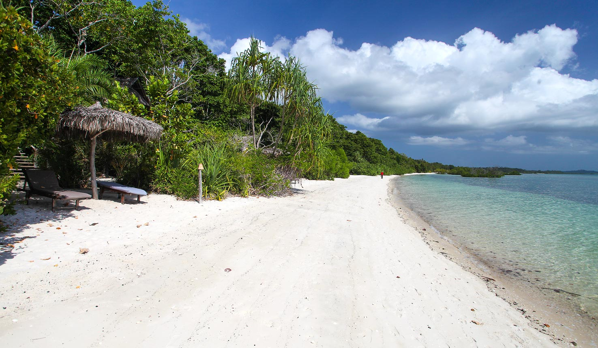
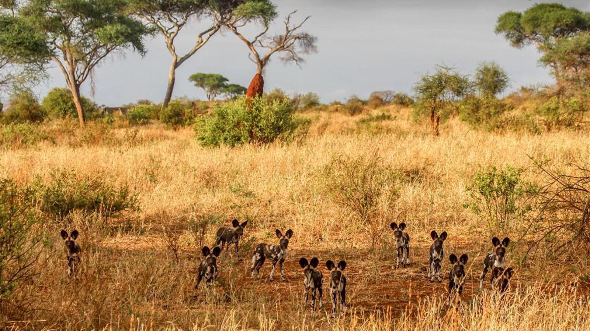
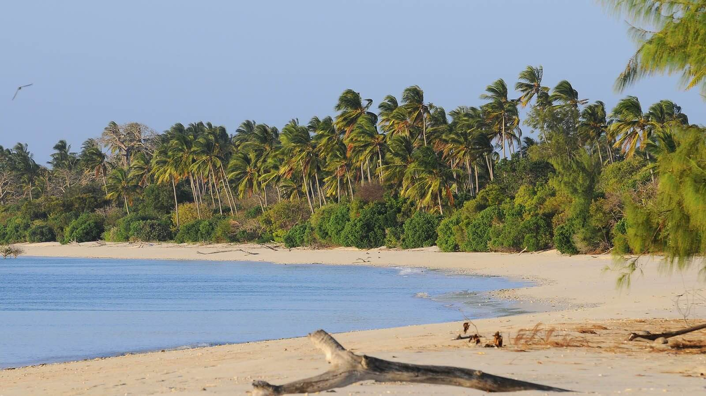

RUAHA GAME RESERVE

Located in the middle of Tanzania ,it is the largest national park in the country.Filled with wild dogs,lions,leopards,elephants,cheetah,impala,bat eared foxes and jackals.The park offers visitors an opportunity to get up close and personal with nature.Due to the park somewhat remote location visitors can enjoy viewing the wildlife without competing with hordes or other tourist.
SELOUS

Savanna animals can be found in this reserve in greater numbers than in any other Africa game reserve ,thanks to the stringest regulation by the wildlife Division of the Tanzania Ministry of Natural Resource and Tourism .Visitors are either allowed by aircraft or walking but no permanent human habitation us allowed
PEMBA ISLAND

Known as the green Island on the Arabic ,Pemba Island lies in the Indian Ocean and its part of the spice island . As the neighbouring Zanzibar ias becoming popular with tourists,more adventurous are seeking out the less crowded Pemba.
TARANGIRE NATIONAL PARK

Smaller than Ruaha ,this national park is a paradise for birds watchers as more than 500 diferent species frequent the park .Its also known for huge numbers of elephants ,boabab trees and tree climbing lions.
MAFIA ISLAND

Its a part of Spice island.The island attracts scuba divers ,game fisherman and people want to relax on the islnd sandy beaches.
MT KILIMANJARO